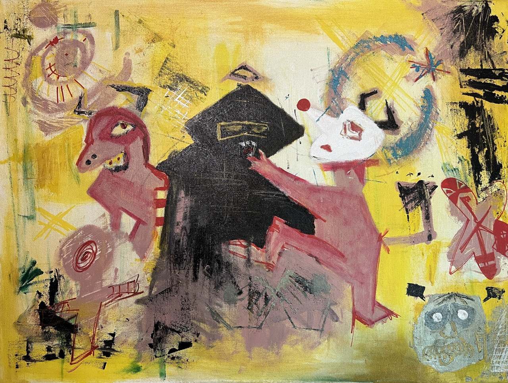

Diana is an Oslo-based artist whose work explores emotions through painting, drawing, and experimental techniques. At 18, she is making her public debut, driven by a lifelong passion for expressing feelings visually and creatively.
Often inspired by music, atmosphere, and the contrasts of color and mood, her art reflects the emotional landscapes she moves through in her own life.
Shifting between mediums like acrylics and graffiti, her process is fluid and intuitive, allowing each piece to take on its own life. Rather than delivering a fixed message, Diana’s work invites interpretation—encouraging viewers to connect with it in their own way, whether through calm, discomfort, or curiosity.